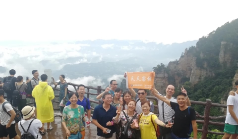
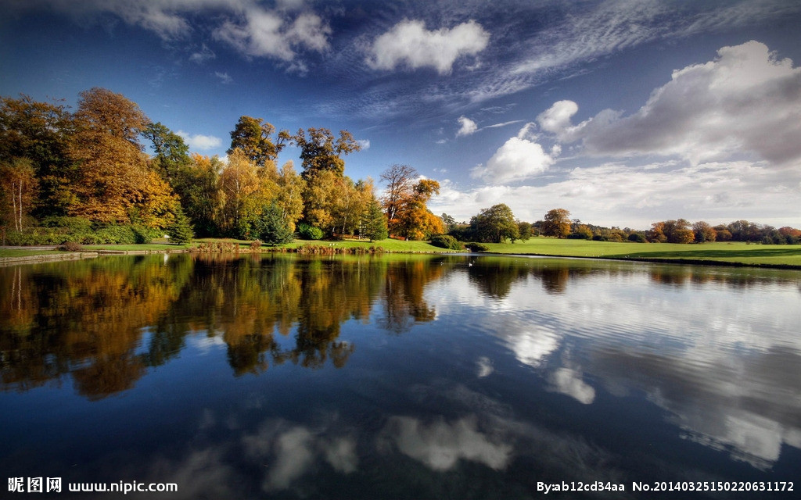
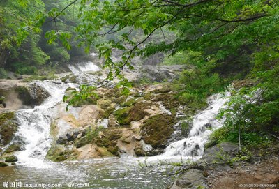
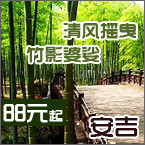
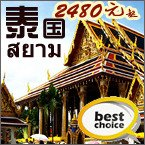

网站首页
旅游资讯
南阳生态
南阳美景
旅游商城
旅游路线
酒店推荐
旅游路线
当季出发
国内旅游
国外旅游
主题游
周边旅游
自助游



<
>
热点
张家界玻璃栈道，极致地球绝版峰墙
蓬莱仙岛：凉快！南阳的朋友们可以去看看
郑州地铁运营路线图，欢迎收藏！
游记
我的温州,杭州之行,把美图分享一下!!
西藏我还想去的地方!!!流连忘返!!!
我的游记分享!!华山之行，相当值得回味和留
攻略
4-5月开车去西藏，阿里，有一起的吗？
旅途中温馨驿站—张家界天天客栈
一起去有山有水的张家界过土味新年
国内游
周边游
出境游
张家界玻璃栈道，极致地球绝版峰墙，行走在无比惬意
2019-03-01
蓬莱仙岛：凉快！南阳的朋友们可以去看看
2019-08-01
郑州地铁运营路线图，欢迎收藏！
2019-07-30
白鹿原山下来，再一次来到昆明池
2019-07-29
张家界五日天门山玻璃桥，森林公园看日出，凤凰古城
2018-04-26
生活压力大暑假带小孩去湖南张家界旅游看看青山绿水
2019-06-20
4-5月开车去西藏，阿里，有一起的吗？
2019-04-09
旅途中温馨驿站—张家界天天客栈
2019-03-20
一起去有山有水的张家界过土味新年
2019-01-06
1-2月去东北雪上撒欢，有一起的吗？
2018-10-23

张家界五日天门山玻璃桥，森林公园看日出，凤凰古城
2018-04-26
蓬莱仙岛：凉快！南阳的朋友们可以去看看
2019-08-01
一起去有山有水的张家界过土味新年
2019-01-06
郑州地铁运营路线图，欢迎收藏！
2019-07-30
旅途中温馨驿站—张家界天天客栈
2019-03-20
张家界玻璃栈道，极致地球绝版峰墙，行走在无比惬意
2019-03-01
白鹿原山下来，再一次来到昆明池
2019-07-29
生活压力大暑假带小孩去湖南张家界旅游看看青山绿水
2019-06-20
4-5月开车去西藏，阿里，有一起的吗？
2019-04-09
1-2月去东北雪上撒欢，有一起的吗？
2018-10-23

蓬莱仙岛：凉快！南阳的朋友们可以去看看
2019-08-01
生活压力大暑假带小孩去湖南张家界旅游看看青山绿水
2019-06-20
张家界玻璃栈道，极致地球绝版峰墙，行走在无比惬意
2019-03-01
1-2月去东北雪上撒欢，有一起的吗？
2018-10-23
白鹿原山下来，再一次来到昆明池
2019-07-29
旅途中温馨驿站—张家界天天客栈
2019-03-20
郑州地铁运营路线图，欢迎收藏！
2019-07-30
张家界五日天门山玻璃桥，森林公园看日出，凤凰古城
2018-04-26
4-5月开车去西藏，阿里，有一起的吗？
2019-04-09
一起去有山有水的张家界过土味新年
2019-01-06
热门景区排行
白鹿原山下来，再一次来到昆明池
蓬莱仙岛：凉快！南阳的朋友们可以去看看
去湖南张家界旅游看看青山绿水
旅途中温馨驿站—张家界天天客栈
4-5月开车去西藏，阿里，有一起的吗？
【18全年甘南全景 深度纯玩 周周发队】扎
12月 有去西藏的吗？无须开车，捡人！
10月左右稻城亚丁，色达，有一起去旅行的
金秋的北疆用心去体会，让心灵恬静地，在
【天空旅行2018】西藏17天藏地大穿越开始
【草原经典-越野深入 天天组队】呼伦贝尔
12月 有去西藏的吗？无须开车，捡人！
南阳搜狐
南阳网络营销
南阳小程序开发
新华旅游
云南旅游
吾爱旅游网
中国玉网
普陀山旅游
网联传媒
临汾旅游网
贵州旅游在线
南阳鲜花网
黄山旅游
开封结婚网
新疆旅游
驴妈妈旅游网
绿野户外网
北京旅游
坝上草原旅游
南阳律师网
网站首页
关于我们
网站建设
广告服务
客服中心
联系我们
免责声明
Copyright 2006-2012 www.okny.cn All Rights Reserved 版权所有：南阳旅游网 备案序号:豫ICP备06010205
豫公网安备 41130202000247号
地址：南阳市独山大道中段 电话：0377-63205555 13663998848 E-Mail:sjwb666@163.com 技术支持：天润科技
本站法律顾问：罗中彬律师 河南先邦律师事务所